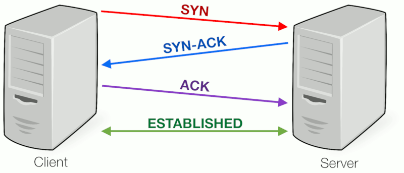

정보통신 수행평가
2513 노재율
4계층 : TCP / UDP
3계층 : IP, ARP, RARP, IGMP, ICMP
TTL : 라우터의 한 홉(Hop)을 통과할 때마다 TTL 값이 1씩 감소한다.
IPv4 (32비트, 4바이트)
유니캐스트 : 한 명 한테만 보냄
멸티캐스트 : 여러명한테 보냄
브로드캐스트 : 네트워크 전체에 보냄
A 0 ┐
B 1 0 | 사용
C 1 1 0 ┘
D 1 1 1 0 - 멀티캐스트
E 1 1 1 1 - 연구용
A : 10.x.x.x
B : 172.16.x.x ~ 172.31.x.x
C : 192.168.x.x
D : 224.x.x.x
NAT 장점
1. 공인 IP주소를 절약함
2. 보안이 됌. (사설 IP를 찾아낼 수 없으니까)
PORT NUM
21 : ftp
22 : ssh
23 : telnet
25 : SMTP
53 : DNS
80 : http
443 : https
#DNS만 TCP와 UDP를 쓸 수 있고, 나머지는 다 TCP를 씀
SNMP
1. UDP를 씀
2. 문제를 발견해줌 (오류제어를 해주진 않음)
SSH_1은 RSA 암호화를 사용한다.
SSH_2는 RSA 외 더 다양한 키 쿄환방식을 지원함.
UDP 패킷 헤더
1. Source Port
2. Destination Port
3. Checksum
4. Packet Length
CMD에서 'nslookup [도메인]' 명령어는 도메인의 IP를 출력해줌.
<보기>에 유리, 빛이 나오는 전송매체는
Optical Fiber (광케이블) 이다.
┌RIP : 거리우선 패킷 (최대 15홉을 못 넘음)
└OSPF
이거 둘 중 하나가 나오면 둘 중 하나가 답
회선교환 : 1:1로만 교환 패킷교환 : 여러명이서 교환
IPv6
1. IPv4에 비해 보안기능 up
2. 주소의 길이가 128bit임
3. 패킷을 멀티캐스트로 사용함.
4. IPv4에 비해 패킷이 단순함.
3 Handshaking
